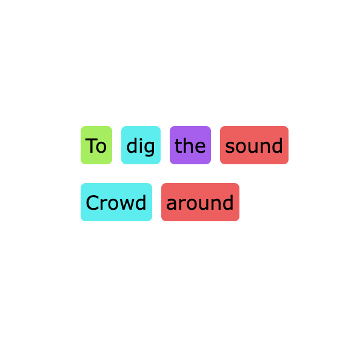
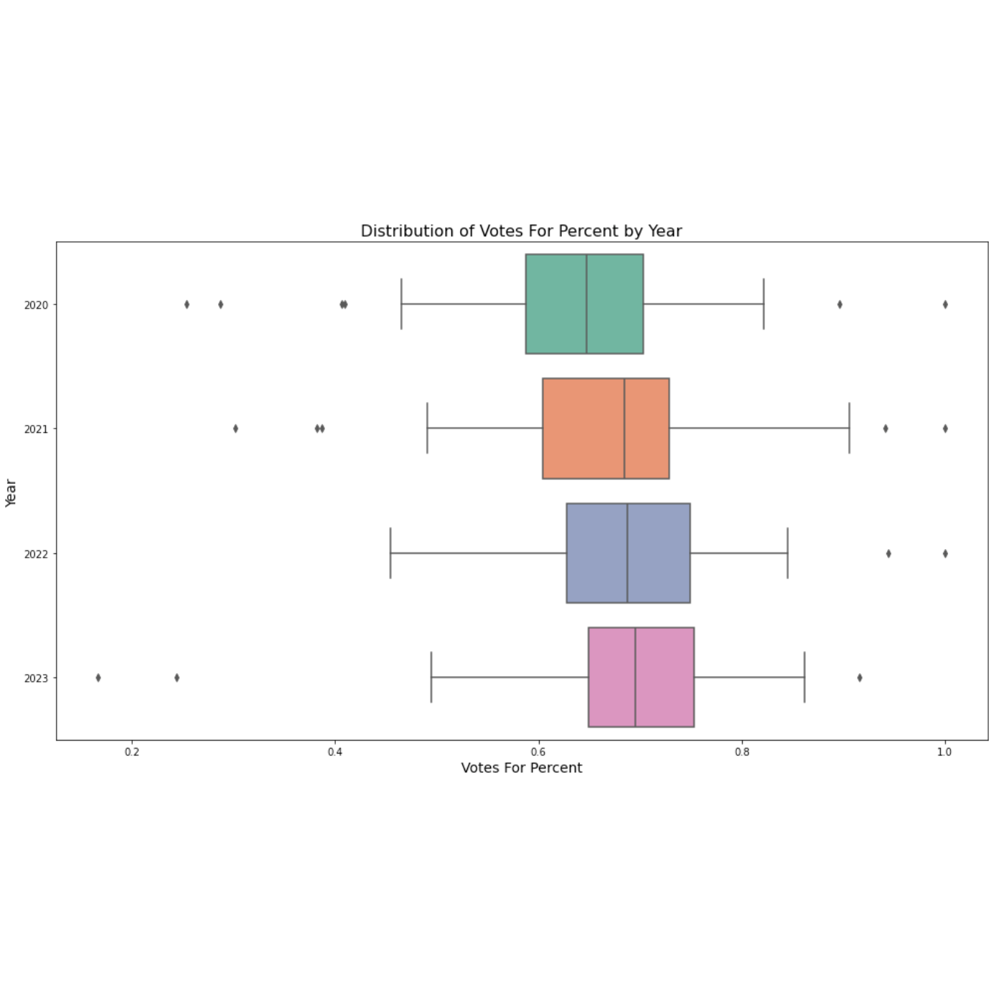
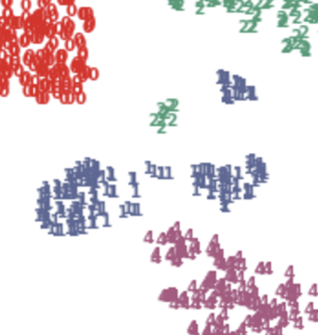

Hi, I'm Andrew Bonnah
I'm a creator at the crossroads of technology, design, and human experience.
With a foundation in engineering and information science, I use my industry experience
and creative thinking
to build intelligent solutions.
Rooted in curiosity, built on continuous learning, and committed to excellence.
Recent Projects
- Phonetic NetworkX ProjectA Python-based web app that uses NetworkX to visualize phonetic relationships in uploaded text. Users can paste in text and explore interactive, graph-based breakdowns.
- U.S. Labor Trends Analysis (2020-2023) Analyzed correlations between union establishments, support, and wages using National Labor Relations Board and Bureau of Labor Statistics data. Revealed how union activity relates to economic trends during COVID-19.
- Node.js Universe SandboxInteractive space simulation built with Node.js for exploring celestial mechanics and gravitational systems.



Resume Snapshot
Here’s the short version. A downloadable PDF with full experience, skills, and project detail is below.
Highlights
- Technical and product experience from academic-industry collaborations (e.g., Microsoft capstone).
- Interned at RSM optimizing enterprise systems, debugging production code, and automating tutorials.
- Led UX improvements for accessible learning tools; conducted user interviews and A/B testing.
- Built Python tools for scraping, automation, and CSV data pipelines supporting dashboard creation.
- Instructional assistant for programming; boosted student performance and helped revise curriculum.
- Leadership across case competitions, co-op housing, and student councils with global and multicultural insight.
Technical Stack & Interests
- Python (pandas, scikit-learn, web scraping, automation, data pipelines)
- JavaScript, TypeScript, Flask, PHP, SQL, and interactive web tools
- Data visualization (Tableau, Power BI, Matplotlib) and dashboard development
- APIs and scraping: SportsDB, NCEI CDO, custom scraping targets
- AI and ML: Prompt engineering, TensorFlow, PyTorch, Keras